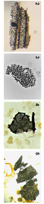

About Me
Research Interests
What?
In am seeking to understand the temporal and spatial dynamics of vegetation, climate, fire regime, peatland development, using fossil records. My research goal is to place the current and ongoing environmental changes into a long-term perspective and improve the predictive capacity of the probable future change.
Where?
My focus ecosystems are the temperate (forests, subalpine-aline, grasslands, wetlands), arctic and boreal environments in central and eastern Europe, western Siberia and northern Alaska.
How?
My main methods are pollen, micro-and macro-charcoal and charcoal morphologies but together with students and collaborators I am using a combination of multi-proxy (plant macrofossil, NPP, testate amoebae, mineral magnetic properties, sediment geochemistry, stable isotopes (δ13C δ15N) molecular markers (n-alkanes, GDDT) and modeling approach.
Dr. Angelica Feurdean
Contact details:
Email: angelica.feurdean@gmail.com;
Postal address:
Altenhöferallee 1
60438 Frankfurt am Main
Social Media:
